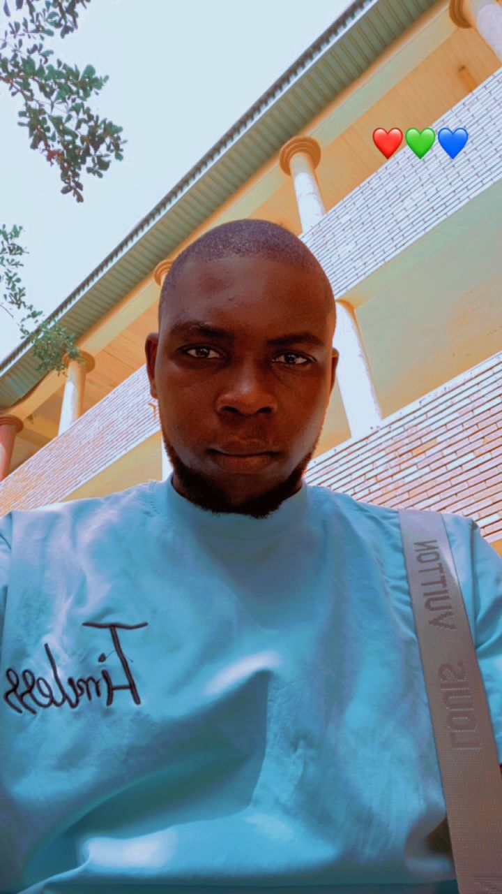

KUMAGA TERFA SYLVESTER
My name is Kumaga Terfa Sylvester,hails from Gboko LGA Benue State.i was born and raised Gboko town in the Middle-belt.i was born with two siblings named Philip and Cement.after graduating from my primary school in 2011,i was enrolled in a primary secondary school in Gboko within thesame year.and i graduated from the secondary school in the year 2017 with SSCE certificate.After graduating from secondary school i worked so hard over the yearss to pursue my degree in my dream university FUTMINNA. The journey has been a tough one but i finally got admitted to study in to the institution through the 2023 JAMB UTME.
List of my courses
- GST 111 (communication in english)
- GST 112 (nigeria people and culture)
- CMS 112 (writing for the media)
- CMS 111 (Introduction to human communication)
- ISM 111 (introduction to information science)
- ISM 112 (Basic computer tools)
- ISM 113 (computer aided design in media process)
- FUTM-ISM 112 (introduction to media studies)